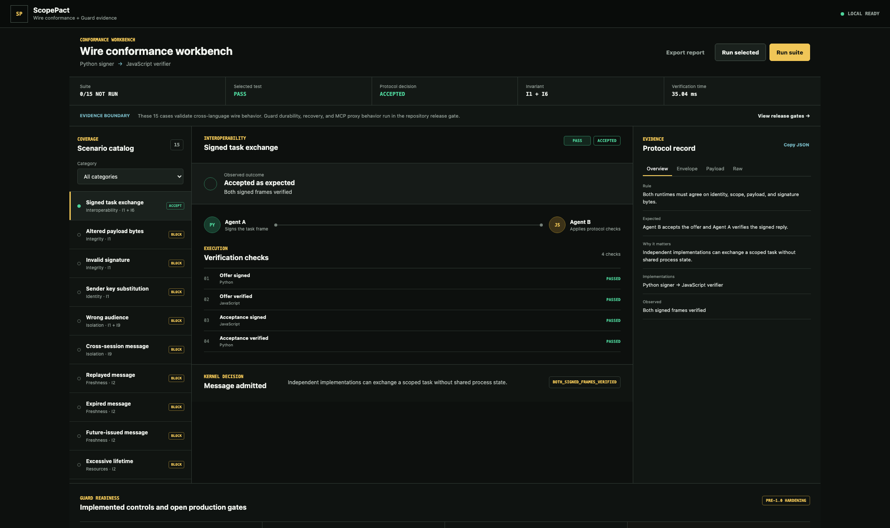

Permissions are hidden in prompts and application state.
Make identity, scope, resources, budgets, expiry, and delegation explicit inputs to enforcement instead of assumptions made by a model.
OPEN TRUST INFRASTRUCTURE
A common trust layer for bounded, accountable agent action across runtimes, protocols, and organizations.
Agents propose. ScopePact decides. Tools execute only inside granted scope.
SIGNED DECISION RECEIPTOUR FOUNDING CONVICTION
As agents move from answering questions to operating tools, services, devices, and money, they cross boundaries built for human accounts and isolated apps. Their authority cannot remain implicit in a prompt or trapped inside one vendor's control plane. ScopePact is our attempt to make delegated authority open, portable, and independently verifiable.
Any agent. Any runtime. Any protocol. One accountable answer before consequence: is this action within its mandate?
PROBLEMS WE INTEND TO SOLVE
From local tool calls to cross-organization delegation and payment.Make identity, scope, resources, budgets, expiry, and delegation explicit inputs to enforcement instead of assumptions made by a model.
Let independent runtimes and organizations exchange a narrow mandate without sharing process state or adopting the same application stack.
Produce portable decision receipts so operators can verify the actor, mandate, policy, and exact effect without exposing private model reasoning.
Create an open enforcement contract that can sit beneath MCP, A2A, payment flows, and future protocols instead of replacing their application semantics.
ScopePact exists so more capable agents do not require more ambient trust. Their authority should become narrower, more portable, and more accountable as their reach grows.
DESIGN PRINCIPLEONE ENFORCEMENT LAYER
ScopePact sits at the effect boundary. It does not replace MCP, A2A, payment protocols, or transports; it gives them the same fail-closed authority model.
Every accepted frame binds sender, audience, session, policy, and payload.
Actions, resources, payees, time, calls, and spend remain explicitly bounded.
Duplicates are suppressed and conflicting effect identifiers fail closed.
Domain-separated transcripts produce receipts another runtime can verify.
INSPECT THE EVIDENCE
The conformance workbench pairs plain-language impact with implementation-level envelopes, payloads, checks, and raw evidence.

RUNNABLE TODAY
ScopePact Guard intercepts tools/call, maps it into the authority
kernel, durably commits the decision, and forwards only effects covered by an
authenticated policy. It remains a pre-1.0 evaluation aid, not a sandbox or a
production certification.
/workspace/project/README.md
Effect reserved under capability grant.
EXECUTABLE EVIDENCE
State migration, filesystem-adapter canonicalization, release-platform CI, external review, and a production pilot remain open gates.
Read the evidence-gated roadmapRUNTIME SUPPORT
Every listed runtime is checked against the same envelope bytes and Ed25519 signature. Enforcement remains concentrated in Rust while portable SDKs mature.
COMMUNITY FIRST
ScopePact is being built as shared trust infrastructure, not a toll on agent communication. Its value grows when independent people can implement it, challenge it, and carry its guarantees into systems we did not design.
Commercial use is welcome. Money does not buy protocol influence, roadmap priority, a maintainer role, or a favorable verification result.
Start with a contribution path matched to your current experience.
Contribution guide → 02 · CHALLENGEBring protocol review, threat analysis, or an interoperability concern.
Open discussions → 03 · ADOPTShare a reproducible integration gap or conformance scenario.
Choose an issue path →RUN IT LOCALLY
From a source checkout. No account, hosted control plane, or network token required.
./verify-all.sh
./scripts/run-guard-proxy.shSCOPEPACT FIELD NOTE
A practical introduction to the authority gap in agentic systems, why prompts are not security boundaries, and how ScopePact constrains MCP tool calls at the point where intent becomes consequence.
Read the field noteOPEN BY DESIGN
Apache-2.0 protocol. MPL-2.0 community implementation. Public transcripts, negative vectors, conformance evidence, governance, and security reporting.
Explore the source